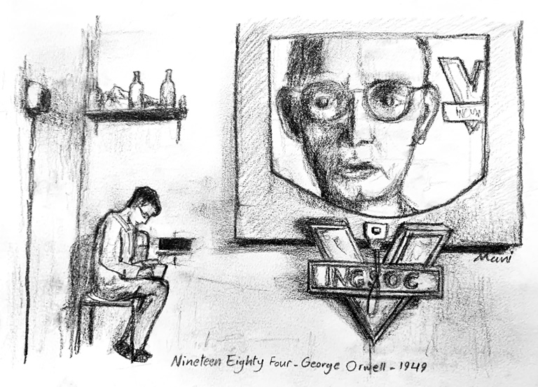
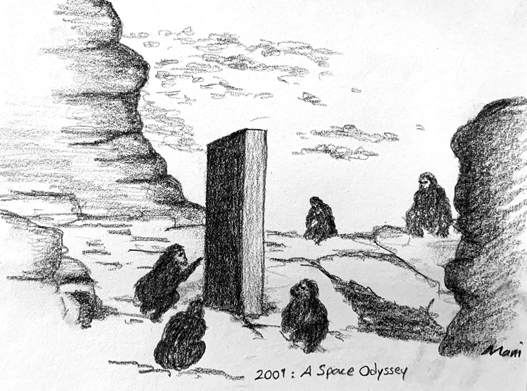

-

-
Vericon
New York, United StatesVericon, the first commercial closed-circuit television system became available in the US.
Timeline
- 
-
Nineteen Eighty-Four
London, United KingdomNineteen Eighty-Four, a dystopian novel written by English novelist George Orwell, was published.
-

-
The NSA
Maryland, United StatesThe National Security Agency (NSA) was created by the United States government.
-

-
World population in 1955
WorldwideWorld population has reached 2.8 billion. The rapid rise in the world population is mainly due because health measures became widely available.
-
The first remote control
Chicago, United StatesThe Zenith Flash-Matic, the first wireless remote control, was invented by Eugene Polley.
-
The first videotape recorder
California, United StatesAmpex released the VRX-1000, the world's first commercially successful videotape recorder.
-
The Twilight Zone
New York, United StatesThe first episode of The Twilight Zone, an American anthology television series created and presented by Rod Serling, was aired.
- 
-
2001: A Space Odyssey
Washington, United States2001: A Space Odyssey, an epic science fiction film produced and directed by Stanley Kubrick, was released.
-
"One giant leap for mankind"
WorldwideThe world watched the greatest single broadcast in television history: Neil Armstrong took the first steps on the moon’s surface.
-
The Internet
California, United StatesComputers at Stanford and UCLA connected for the first time. This moment is considered the beginning of the Internet.
-

-
World population in 1970
WorldwideWorld population has reached 3.6 billion., growth driven by high fertility rates.
-
The ECHELON
Washington, United StatesThe ECHELON program was formally established by the United States government to monitor the military and diplomatic communications of the Soviet Union during the Cold War, but later became the first-ever automated global mass surveillance system.
-

-
The end of the Gold Standard
Washington, United StatesThe United States government decides no longer convert dollars to gold at a fixed value, abandoning the Gold Standard.
-
The first email sent
Massachusetts, United StatesRay Tomlinson sent the first email. It was a test message to himself.
-

-
The Watergate Scandal
Washington, United StatesThe Watergate Scandal begins when employees of President Nixon's reelection campaign are caught breaking into the Democratic National Committee headquarters. A Senate investigation follow.
-
The first cellphone
New York, United StatesThe Motorola DynaTAC 8000X, the world’s first hand-held wireless phone, was unveiled.
-
The first personal computer
New Mexico, United StatesThe Altair 8800, the first commercially successful personal computer, was released.
-
The Church Committee
Washington, United StatesA series of leaks revealed illegal and unethical activities involving the FBI, the CIA, and the U.S. military. The U.S. Senate established an Intelligence Committee to investigate those activities.
-
Start me up
New Mexico, United StatesMicrosoft Corporation was founded by Bill Gates and Paul Allen to develop computer software.
-

-
Think different
California, United StatesApple Computer Company was founded by college dropouts Steve Jobs and Steve Wozniak.
-

-
The first VHS VCR
Tokyo, JapanThe JVC HR-3300 VIDSTAR, the world's first VHS-based VCR to be released to the market, was revealed.
-
The GPS
North Dakota, United StatesThe Global Positioning System (GPS), a satellite-based radionavigation system owned by the United States government, was launched.
-
V for Vendetta
London United, KingdomV for Vendetta, a British graphic novel written by Alan Moore and illustrated by David Lloyd was published.
-
The first one-piece camcorder
Tokyo, JapanSony revealed the first one-piece camcorder, the Betamovie BMC100.
-

-
World population in 1985
WorldwideWorld population has reached 4.8 billion., marked by falling birthrates in some developing nations.
-
The Handmaid's Tale
Toronto, CanadaMargaret Atwood published her highly acclaimed dystopian novel The Handmaid's Tale.
-
The first GPS receiver
California, United StatesMagellan Navigation Inc. unveiled its Magellan NAV 1000, the world's first commercial handheld GPS receiver.
-
The Ampex DCT
California, United StatesAmpex released the DCT, the first compressed digital video camera.
-
Amazon
Washington, United StatesAmazon, an American technology company, was founded by Jeff Bezos.
-
The SORM
Moscow, RussiaThe SORM (System for Operative Investigative Activities) was implemented by the Russian Government to access telephone and Internet communications all over Russia.
-

-
The Great Firewall of China
Beijing, ChinaThe Golden Shield Project often referred to as the Great Firewall of China, a censorship and surveillance project operated by the China Government, was initiated.
-
Did you mean Google?
California, United StatesGoogle, an American technology company, was founded by Larry Page and Sergey Brin.
-

-
World population in 2000
WorldwideWorld population has reached 6.1 billion.. Most of the growth took place in Asia, Africa and Latin America.
-
AdWords
California, United StatesGoogle launched AdWords, the most advanced online advertising platform at that time.